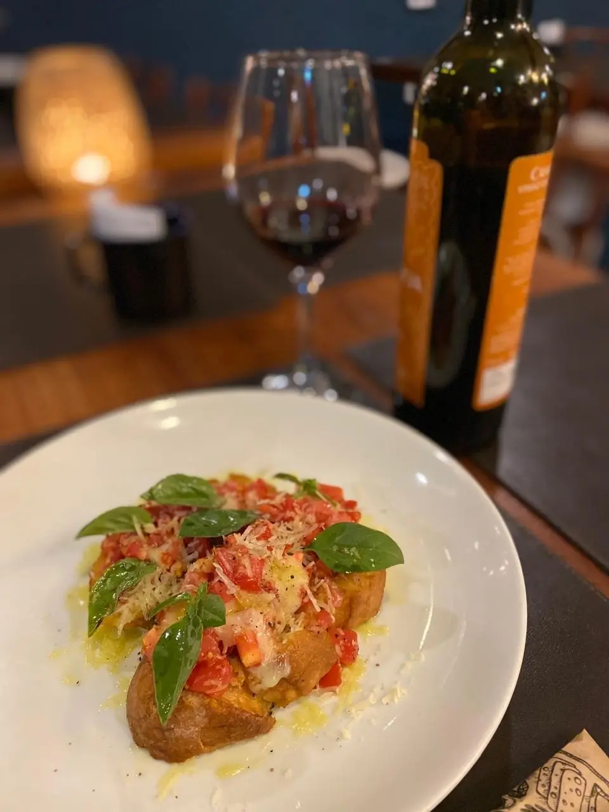
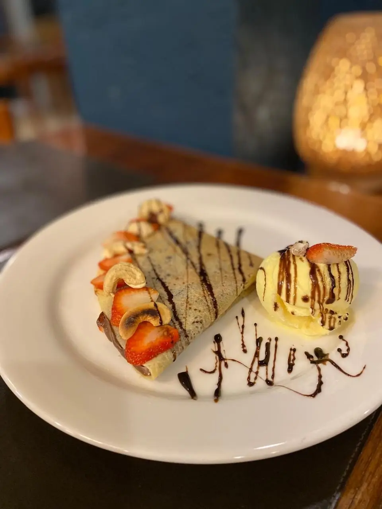

Café da manhã e restaurante
Sabores que acompanham cada momento.
Do primeiro café do dia a uma refeição especial, em ambientes acolhedores do hotel.O dia começa com uma mesa preparada com cuidado, composta por frutas, pães, bolos, frios e receitas feitas no hotel, valorizando ingredientes e sabores da região.
Ao longo do dia, o restaurante recebe hóspedes e visitantes em um ambiente intimista, integrado ao jardim e marcado pela madeira e pelos detalhes que preservam a personalidade do Vila Nova do Príncipe.
Pratos leves, opções para compartilhar e sobremesas completam uma experiência gastronômica simples, afetiva e bem apresentada.

Manhã
Um despertar com sabores e cuidado.
O café da manhã combina variedade, preparo atencioso e o clima acolhedor que marca a hospedagem.
Café e restaurante
Ambiente, mesa e sabores.
Uma seleção das experiências gastronômicas do hotel.



